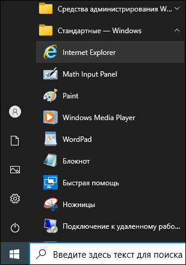

Запуск из меню Пуск
Вы можете запустить Internet Explorer, найдя браузер в меню Пуск.
-
Щёлкните на значке
 (Пуск) в левом нижнем углу экрана.
Отобразится содержимое меню Пуск (см. изображение ниже).
(Пуск) в левом нижнем углу экрана.
Отобразится содержимое меню Пуск (см. изображение ниже).
-
В списке меню слева выберите Стандартные - Windows > Internet
Explorer.
 Окно браузера отобразится на рабочем столе.